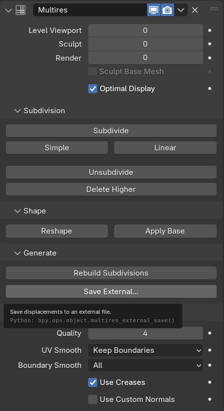

Modifier Multiresolution¶
Modifier Multiresolution (thường được gọi tắt là "Multires") cho bạn khả năng subdivide một mesh tương tự modifier Subdivision Surface, nhưng còn cho phép bạn chỉnh sửa các cấp độ subdivision mới trong Sculpt Mode.
Ghi chú
Multiresolution là modifier duy nhất không thể được di chuyển lại vị trí trong stack xuống dưới bất kỳ modifier nào làm thay đổi geometry hay dữ liệu khác của object (tức là tất cả modifier Generate, một số modifier Modify và một số modifier Simulate không thể đứng trước Multiresolution).
Các modifier Deform sẽ được áp dụng lên các cấp độ subdivision của Multires thay vì lên mesh gốc, nếu chúng đứng sau Multires.
Mẹo
Điều này đặc biệt hữu ích để chiếu lại chi tiết từ một bản sculpt khác bằng modifier Shrinkwrap. Để có kết quả tốt nhất, hãy chắc chắn đặt phương pháp wrap là Project, chế độ snap là Above Surface và bật Negative.
Tùy chọn¶


Modifier Multiresolution.¶
- Mức Levels Viewport
Đặt cấp độ subdivision hiển thị trong viewport.
- Sculpt
Đặt cấp độ subdivision dùng riêng trong Sculpt Mode. Khi đang ở Sculpt mode, dùng Alt-1 để giảm cấp độ hoặc Alt-2 để tăng.
- Render
Đặt cấp độ subdivision hiển thị khi render.
- Sculpt Base Mesh
Biến dạng mesh gốc chưa subdivide thay vì các cấp độ cao hơn. Trong lúc đó, cấp độ đã đặt vẫn được xem trước. Điều này cho phép bạn thực hiện những thay đổi rộng hơn về mặt thị giác trên các chi tiết sculpt ở cấp cao mà không tạo ra nhiễu bề mặt và artifact.
- Optimal Display
Chỉ hiển thị các edge của geometry gốc. Vì vậy khi render wireframe của object này, các đường wire của edge sau khi subdivide sẽ bị bỏ qua.
Subdivision¶
- Subdivide
Tạo một cấp độ subdivision mượt mà (dùng thuật toán Catmull-Clark mặc định).
- Simple
Tạo một cấp độ subdivision với các cạnh mesh gốc không được làm mượt (dùng phép nội suy đơn giản bằng cách subdivide các cạnh mà không làm mượt).
- Linear
Tạo một cấp độ subdivision hoàn toàn không được làm mượt (dùng nội suy tuyến tính của displacement đã sculpt hiện tại).
- Unsubdivide
Tái tạo một cấp độ subdivision thấp hơn từ mesh gốc hiện tại.
- Delete Higher
Xóa tất cả các cấp độ subdivision cao hơn cấp độ hiện tại.
Shape¶
- Reshape
Sao chép hình dạng của một object khác lên các cấp độ multires bằng cách sao chép tọa độ vertex của nó.
Để sử dụng, trước tiên hãy chọn một mesh object khác có topology và chỉ số vertex khớp nhau, sau đó Shift chọn object mà bạn muốn sao chép tọa độ vertex vào, rồi nhấp Reshape.
- Apply Base
Chỉnh sửa mesh gốc chưa subdivide để khớp với hình dạng của mesh đã subdivide. Thao tác này áp dụng một phép heuristic lên các vertex của mesh gốc, với giả định rằng một modifier Subdivision Surface sẽ được thêm vào mesh.
- Conform Base
Chỉnh sửa mesh gốc chưa subdivide để khớp với hình dạng của mesh đã subdivide. Vị trí thu được của các vertex mesh gốc sẽ trùng với vị trí đã subdivide của chúng.
Generate¶
- Rebuild Subdivisions
Tái tạo tất cả các cấp độ subdivision có thể để tạo ra mesh gốc có độ phân giải thấp hơn. Cái này dùng để tạo một phiên bản multiresolution tối ưu từ một bản sculpt đã có sẵn. Tùy chọn này chỉ khả dụng khi chưa tạo cấp độ subdivision nào thông qua modifier.
- Save External
Lưu các displacement vào một file
.btxbên ngoài.
Advanced¶
- Quality
Độ chính xác khi đặt các vertex (so với vị trí lý thuyết của chúng) có thể được hạ xuống để có hiệu năng tốt hơn khi làm việc với các mesh nhiều polygon.
- UV Smooth
Cách xử lý UV trong quá trình subdivision.
- None:
UV giữ nguyên không đổi.
- Keep Corners:
Các UV island được làm mượt, nhưng biên của chúng giữ nguyên.
- Keep Corners, Junctions:
UV được làm mượt, các góc trên biên không liên tục và các điểm giao của ba vùng trở lên được giữ sắc.
- Keep Corners, Junctions, Concave:
UV được làm mượt, các góc trên biên không liên tục, các điểm giao của ba vùng trở lên cùng các điểm nhọn và góc lõm được giữ sắc.
- Keep Boundaries:
UV được làm mượt, biên được giữ sắc.
- All:
UV và biên của chúng được làm mượt.
- Boundary Smooth
Điều khiển cách các biên hở (và các góc) được làm mượt.
- All:
Làm mượt biên, bao gồm cả các góc.
- Keep Corners:
Làm mượt biên, nhưng các góc được giữ sắc.
- Use Creases
Sử dụng các giá trị Edge Crease có trọng số được lưu trong các edge để điều khiển mức độ mượt của chúng.
- Use Custom Normals
Nội suy các Custom Split Normals hiện có của mesh thu được.
Cách dùng¶
Baking¶
Baking chuyển đổi các chi tiết geometry độ phân giải cao, chẳng hạn displacement đã sculpt hay surface normals, thành các texture map 2D. Sau đó những map này có thể được áp dụng lên một mesh độ phân giải thấp hơn để tái tạo vẻ ngoài của chi tiết bề mặt tinh tế mà không phải trả giá về hiệu năng như khi dùng geometry dày đặc.
Quá trình này rất quan trọng cho các workflow mà dữ liệu sculpt độ phân giải cao được chuyển sang mesh độ phân giải thấp để render hoặc dùng trong game engine.
Để tạo normal map hoặc displacement map, hãy dùng tùy chọn Bake from Multires trong panel Render. Tính năng này so sánh hai cấp độ phân giải của modifier Multiresolution:
Viewport Levels: Được dùng làm mesh gốc độ phân giải thấp.
Render Levels: Được dùng làm mesh chi tiết độ phân giải cao.
Sự khác biệt giữa hai cấp độ này sẽ được bake vào một texture map.
Các loại Bake¶
Bake Type quyết định loại thông tin bề mặt nào được trích xuất từ modifier Multiresolution.
Normals: Bake sự khác biệt hướng surface normal giữa cấp gốc và cấp chi tiết. Normal map thu được mã hóa thông tin chiếu sáng, tái tạo các chi tiết sculpt tinh tế trong shading mà không phải sửa đổi geometry thực. Lý tưởng để dùng với các material có normal map trong Cycles, Eevee và các engine thời gian thực.
Displacement: Bake sự chênh lệch độ cao giữa mesh gốc và mesh độ phân giải cao thành một ảnh grayscale. Vùng sáng thể hiện vùng nhô lên và vùng tối thể hiện vùng lõm xuống. Map này có thể dùng cho displacement thật trong các render engine hoặc cho shading dựa trên parallax/độ cao.
Vector Displacement: Bake các vector displacement 3D thể hiện độ dời không gian đầy đủ từ bề mặt gốc đến bề mặt chi tiết. Khác với displacement thông thường, phương pháp này có thể ghi lại các phần vươn ra (overhang) và displacement không theo phương thẳng đứng, cho phép thể hiện chính xác hơn các chi tiết sculpt phức tạp.
Texture thu được mã hóa displacement XYZ trong các kênh màu RGB.
Quan trọng
Để đảm bảo bake đúng:
Đặt Viewport Levels của modifier Multiresolution thành 0 để mesh gốc thực sự là độ phân giải thấp.
Đặt Render Levels lên cấp độ sculpt cao nhất có chứa chi tiết mong muốn.
Object phải được unwrap UV đúng cách và có một node Image Texture được chọn trong Shader Editor để nhận map đã bake.
Nếu Viewport Level cao hơn 0, một phần displacement đã sculpt sẽ được áp dụng sẵn, khiến kết quả bake không chính xác.
Mẹo
Dùng các định dạng ảnh 16-bit hoặc 32-bit (ví dụ OpenEXR hoặc TIFF) cho displacement map hoặc vector displacement map để giữ được độ chính xác.
Luôn kiểm tra xem color space của ảnh đã được đặt là Non-Color trong Image Editor hoặc Shader Editor hay chưa.
Xem thêm
Để biết thêm chi tiết về các cài đặt và quy trình bake nói chung, xem Bake kết quả render.